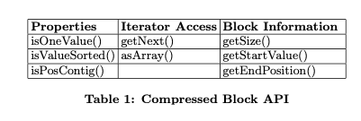
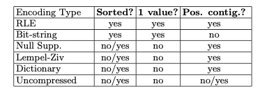
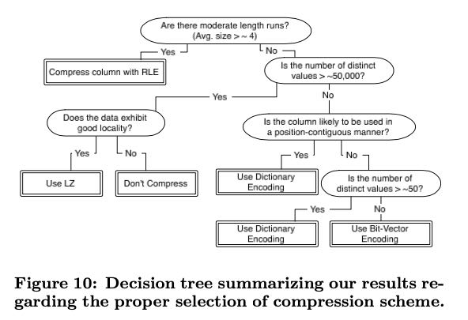

Integrating Compression and Execution in Column-Oriented Database Systems
这篇文章讲的是如何在C-Store上对压缩数据（更准确地将是编码后数据）进行查询。解码或者解压缩对于CPU开销都是比较大的，所以如果可以直接在原始数据上查询，可以节省不少CPU时间。
做字典编码的时候提到一个问题，就是要在byte边界上对齐，否则CPU在处理byte边界上做bit shift还是比较费的。比如32 distinct values可以编码5bits, 那么我们可以使用一下几种存储方案： 1 value in 1byte, 3 values(10bits) in 2 bytes, 4 values (20bits) in 3 bytes, 6 values (30bits) in 4 bytes. 如果按照5 bits进行编码的话，则会涉及到bit packing的问题，对CPU开销还是比较大的。
在规划阶段必须把decompress带来的CPU cost也考虑进去，然后在执行层也需要尽量去判断是否可以直接在压缩数据上操作。为了简化代码，作者定义了下面几个Block API（或者说是chunk API）

对于读取上来的chunk, 我们可以做几个判断：
- property规定chunk的某些属性, chunk里面只有一个值(RLE), 还是排序好的值, 以及值是否连续存放(类似bit-vector就不是连续存放到)
- iterator access规定访问方法，是可以遍历，还是必须全部解压缩读取上来
- block information 则提供这个chunk上某些属性
然后下面是这些编码格式的属性情况，执行器在读取上chunk之后会根据chunk属性做某些算法上的调整。我的一个感觉是，这套框架要求对存储格式访问代码有某些要求。我们必须要底层交给我们实际数据，相反应该把存储格式按照编码/压缩的block直接交给我们，然后我们做某些执行上的优化。推迟解码工作，将解码工作挪动到具体执行层，而不是在scan node层面上。

文章最后给了一张图说明怎么选择编码方式，其中good locality的意思是数据之间本身比较相关（比如有重复模式，或者是排序好，或者是有某些pattern）总之就是自身的熵比较低，那么可以使用通用压缩算法来达到高压缩率，否则还是不压缩的好。
